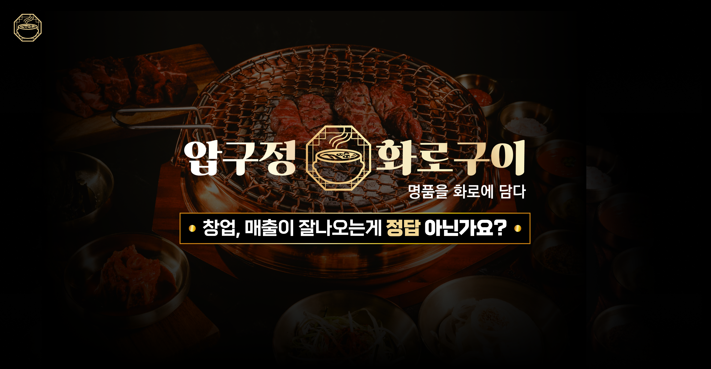
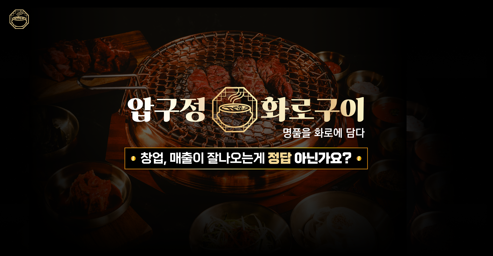
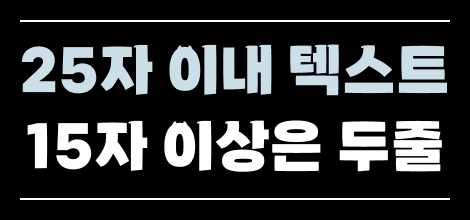

설문 단계
Step1. 기본 정보
Step2. 메인 화면 선택
Set1
추천 대상 : 당사 로고가 없는 경우, 대표메뉴 사진을 강조하고 싶은 경우, 넣고싶은 수식어가 많은 경우, 강조하고 싶은 키워드가 있는 경우


필수사항
- 4~6자리 짝수 메인 텍스트(ex.상호명, 강조내용)
- 강조하고 싶은 키워드 3~4개 (ex. 점심저녁평일주말)
- 반듯하게 원형이 되게끔 정면각으로 찍은 대표 이미지 사진(누끼 딴 이미지이거나 누끼가 가능하도록 방해물이 없는 형태가 확실한 이미지)
- 깔끔한 배경사진
선택사항
- 원형 위에 들어가는 12자 이내의 서브 텍스트 1 (ex. 점심 저녁 장사 모두 붙잡은)
- 20자 이내의 서브 텍스트 2 (ex. ~는 실패가 없습니다)
- 로고 (상단 좌측에 들어가게 됩니다)
Set2
추천 대상 : 로고(상호명)을 강조하고 싶은 경우, 대표메뉴 하나를 강조하고 싶은 경우

필수사항
- 로고파일
- 로고 위에 들어갈 10~30자 이내의 서브 텍스트
- 로고 아래에 들어갈 비스듬히 찍은 대표 메뉴 사진(누끼 딴 이미지이거나 누끼가 가능하도록 방해물이 없는 형태가 확실한 이미지)
- 깔끔한 배경사진
Set3
추천 대상 : 점심/저녁 영업을 강조하고 싶은 경우, 정면각으로 찍은 메뉴 사진이 있는 경우


필수사항
- 로고 위에 들어갈 10~30자 이내의 서브 텍스트
- 로고 아래에 들어갈 대표 메뉴 사진(누끼 딴 이미지이거나 누끼가 가능하도록 방해물이 없는 형태가 확실한 이미지)
- 샘플처럼 반반 분리가 가능하도록 반듯하게 원형이 되게끔 정면각으로 찍은, 각 좌우를 대표하는 메뉴 이미지 사진 2장(누끼 딴 이미지이거나 누끼가 가능하도록 방해물이 없는 형태가 확실한 이미지)
선택사항
- 로고파일 (없을시 앞에서 선택한 폰트로 상호명이 들어감)
- 하단에 들어갈 10~30자 이내의 서브 텍스트
- 좌우 영역에 들어갈 10자이내 텍스트 2가지 (Ex.점심에는 식사, 저녁에는 술안주)
Set4
추천 대상 : 상호명보다 특징을 강조하고 싶은 경우, 누끼 대표메뉴 이미지가 있는 경우


필수사항
- 로고 위에 들어갈 10~20자 이내의 서브 텍스트 (ex. 대한민국 대표 쪽갈비찜)
- 25자 이내의 메인 텍스트 (ex. 쪽갈비 브랜드 최초 원팩 조리가능 창업)
- 비스듬히 찍은 대표 메뉴 사진 (누끼 딴 이미지이거나 누끼가 가능하도록 방해물이 없는 형태가 확실한 이미지)
선택사항
- 상단과 배경에 패턴식으로 들어갈 로고파일
- 메인텍스트 우측에 들어가는 4글자 이내의 간단한 텍스트(ex. 전액면제)
- 메인텍스트 아래에 들어가는 서브 텍스트 (ex. ~에서 창업주분들을 모집합니다)
Set5
추천 대상 : 상호명과 특징만 심플하게 강조하고 싶은 경우
 

필수사항
- 로고파일
- 25자 이내의 서브 텍스트 (ex. 창업, 매출이 잘 나오는게 정답아닌가요?)
- 어둡게 깔 배경용 이미지
선택사항
- 좌측 상단에 넣을 심볼형 로고
Set6
추천 대상 : 대표사진과 특징을 강조하고 싶은 경우


필수사항
- 로고파일(심볼, 워드형 둘다 있으면 좋음)
- 20자 이내의 서브 타이틀 (ex. ㅇㅇㅇㅇ는 경쟁하지 않습니다)
- 10자 이내의 메인 타이틀 (ex. 독점할 뿐입니다)
- 깔끔한 고해상도의 배경용 이미지
- 50자 이내로 문구 정리한 특징 3가지(각 글자수가가 비슷한편이 보기에 예쁩니다.)
선택사항
- 타이틀 상단에 넣을 심볼형 로고
공통 유의사항
- 로고파일 제공시 일러스트레이터(확장자 ai) 또는 가로 500px 이상의 배경이 투명한 png파일
- 모든 사진 이미지는 2000px 이상의 원본 고화질로 제공하여야 함
- 스페이스바는 0.5자입니다.
previous
Next
Step3. 스티키 메뉴 추가
추가
- 배경색은 브랜드 컬러를 활용
- 페이지 각 영역이 단어로 된 메뉴와 대응 될 수 있게 순서와 구분이 확실할 경우 사용
* 상단 스티키 메뉴 선택시, 하단 스티키 상담신청 바는 선택 불가
previous
Next
Step4. 강조 폰트 키워드 선택
살짝 귀여운
약간 삐죽한
옛스러운
나뉘어진
세련된
전통적인
딱딱한
견고한
거대한
약간 삐죽한
옛스러운
나뉘어진
세련된
전통적인
딱딱한
견고한
거대한
previous
Next
Step5. 타이틀 스타일 선택
Set1

필수사항
- 타이틀 (5~20자), 색으로 강조하고 싶은 단어는 작은 따옴표( ‘ )을 사용하여 표기.
*강조부분이 대부분이어선 안됨.
(ex. ‘20자 이내' 의 텍스트 15자 이상은 두줄입니다.)
*20자 이내로 제한하는 이유는 그 이상으로 글자수가 길어지면 모바일에서 타이틀 크기가 작아지거나 줄이 세줄 이상으로 길어지며 가독성이 떨어지기 때문입니다.
요즘은 핸드폰으로 인터넷을 하는 사람들이 더 많기 때문에 모바일을 반드시 고려하여야 합니다.
선택사항 (화면 예시에 없어도 영역마다 적용가능)
- 타이틀 위에 들어가는 서브타이틀 (10~30자)
- 하단에 들어가는 강조 텍스트 (10~30자)
- 영역 하단에 들어가는 설명 텍스트 (150자 이내)
- 배경에 넣을 이미지 3장이내 (모든 영역에 배경이 들어가면 가독성이 떨어지므로 디자인 작업시 갯수, 밝기 조정될 수 있음)
- 상단 메뉴(클릭하면 해당페이지 이동) 추가 여부
Set2


필수사항
- 타이틀 (5~25자), 색으로 강조하고 싶은 단어는 작은 따옴표( ‘ )을 사용하여 표기.
*강조부분이 대부분이어선 안됨.
(ex. 상호명 만의 ‘성공 경쟁력')
*20자 이내로 제한하는 이유는 그 이상으로 글자수가 길어지면 모바일에서 타이틀 크기가 작아지거나 줄이 세줄 이상으로 길어지며 가독성이 떨어지기 때문입니다.
요즘은 핸드폰으로 인터넷을 하는 사람들이 더 많기 때문에 모바일을 반드시 고려하여야 합니다.
선택사항 (화면 예시에 없어도 영역마다 적용가능)
- 타이틀 아래에 들어가는 강조 텍스트 (~60자)
- 영역 하단에 들어가는 설명 텍스트 (150자 이내)
- 배경에 넣을 이미지 3장이내 (모든 영역에 배경이 들어가면 가독성이 떨어지므로 디자인 작업시 갯수, 밝기 조정될 수 있음)
- 상단 메뉴(클릭하면 해당페이지 이동) 추가 여부
Set3
필수 사항
- 타이틀 (5~25자), 색으로 강조하고 싶은 단어는 작은 따옴표( ‘ )을 사용하여 표기.
*강조부분이 대부분이어선 안됨.
(ex. 상호명 만의 ‘성공 경쟁력')
*20자 이내로 제한하는 이유는 그 이상으로 글자수가 길어지면 모바일에서 타이틀 크기가 작아지거나 줄이 세줄 이상으로 길어지며 가독성이 떨어지기 때문입니다.
요즘은 핸드폰으로 인터넷을 하는 사람들이 더 많기 때문에 모바일을 반드시 고려하여야 합니다.
선택사항 (화면 예시에 없어도 영역마다 적용가능)
- 영역하단에 들어가는 설명글 (150자 이내)
- 배경에 넣을 이미지 3장이내 (모든 영역에 배경이 들어가면 가독성이 떨어지므로 디자인 작업시 갯수, 밝기 조정될 수 있음)
- 상단 메뉴(클릭하면 해당페이지 이동) 추가 여부
공통 유의사항
* 배경색은 랜딩페이지에서 각 영역이 구분되고, 내용에 맞게 어우러질 수 있도록 당사 디자이너가 적절히 패턴, 로고 활용 등 조정하여 들어갑니다.
- 로고파일 제공시 일러스트레이터(확장자 ai) 또는 가로 500px 이상의 배경이 투명한 png파일
- 모든 사진 이미지는 2000px 이상의 원본 고화질로 제공하여야 함
- 스페이스바는 0.5자입니다.
* 배경색은 랜딩페이지에서 각 영역이 구분되고, 내용에 맞게 어우러질 수 있도록 당사 디자이너가 적절히 패턴, 로고 활용 등 조정하여 들어갑니다.
- 로고파일 제공시 일러스트레이터(확장자 ai) 또는 가로 500px 이상의 배경이 투명한 png파일
- 모든 사진 이미지는 2000px 이상의 원본 고화질로 제공하여야 함
- 스페이스바는 0.5자입니다.
previous
Next
Step6. 구성
*폰트, 배경, 글자색등은 앞선 선택에 따라 통일성 있게 반영되는 부분으로 아래의 예시화면과 같지 않습니다.
*보유하신 자료에 따라 가능하신 구성을 선택하시면 됩니다.
1. 특징
Set1
추천대상: 여러가지 특징을 상세하게 글로 설명하고 싶은 경우(2개이상부터 가능)


필요자료:
- 각 특징에 맞는 이미지 제공 (1000px 이상의 고해상도)
- 15자 이내의 각 특징 제목
- 150자 이내의 각 특징 설명
Set2
추천대상: 사진과 짧은 설명글이 있는 경우(2~4개)


필요자료:
- 각 특징에 맞는 이미지
- 25자 이내의 제목
- 50자 이내의 설명
*강조할 부분은 ‘와 ‘ 사이에 적어주시면 됩니다.
Set3
추천대상: 단어로 된 여러 특징을 간단히 설명하고 싶은데 하나하나 매칭되는 이미지가 없는 경우(3~9개)


필요자료:
- 가운데 들어갈 경계가 깔끔한 누끼 이미지(1000px 이상 고화질)
- 각 키워드 (3개~ 9개)
Set4
추천대상: 가운데 넣을 세로로 긴 모델이미지가 있는 경우(4개)

필요자료:
- 일정한 느낌과 사이즈의 메뉴 고화질 사진(가로 1000px 이상)
- 30자이내의 각 특징 4가지. 강조할 부분은 ‘ ‘ 안에
- (선택) 하단에 넣을 텍스트
Set5
추천대상: 사진과 설명글이 있는 경우(4개)

필요자료:
- 각 특징에 맞는 이미지
- 25자 이내의 제목
- 60자 이내의 설명
* 강조할 부분은 ‘와 ‘ 사이에 적어주시면 됩니다.
2. 메뉴 소개
Set1
추천대상: 메인, 사이드 메뉴가 나뉘어져 있는 경우


필요자료:
- 일정한 느낌과 사이즈의 메뉴 고화질 사진(가로 1000px 이상)
- 사진과 메뉴 일치를 위해 사진파일명에 메뉴 이름 표기(스페이스바는 ‘_(언더바)’ 처리 - ex. 간장게장_정식.JPG )
- 사진파일명과 메뉴이름을 표기한 텍스트파일 전달
(ex. 메뉴이름정리.doc -> hwp 파일 맥용호환 안되므로 사용 불가(DSC0127.JPG - 간장게장 정식, DSC0128.JPG - 양념게장 정식))
Set2
추천대상: 메뉴 가짓수가 적은 경우

필요자료:
- 일정한 각도로 촬영한 고화질 메뉴 사진의 누끼(가로 1000px 이상)
(누끼 딴 png 이미지이거나 누끼가 가능하도록 방해물이 없는 형태가 확실한 이미지)
- 사진과 메뉴 일치를 위해 사진파일명에 메뉴 이름 표기
(스페이스바는 ‘_(언더바)’ 처리 - ex. 간장게장_정식.JPG )
- 사진파일명과 메뉴이름을 표기한 텍스트파일 전달
(ex. 메뉴이름정리.doc -> hwp 파일 맥용호환 안되므로 사용 불가(DSC0127.JPG - 간장게장 정식, DSC0128.JPG - 양념게장 정식))
Set3
추천대상: 메뉴 품목이 특화되어 가짓수가 적은 경우, 메뉴개별 설명보다 묶여진 카테고리가 중요한 경우

필요자료:
- 일정한 각도로 촬영하였으며 배경이 투명한 1000px이상의 경계가 깔끔한 누끼 png
(누끼작업요청시 누끼가 가능하도록 방해물이 없는 형태가 확실한 이미지)
- 사진과 메뉴 일치를 위해 사진파일명에 메뉴 이름 표기
(스페이스바는 ‘_(언더바)’ 처리 - ex. 간장게장_정식.JPG )
- 사진파일명과 메뉴이름을 표기한 텍스트파일 전달
(ex. 메뉴이름정리.doc -> hwp 파일 맥용호환 안되므로 사용 불가(DSC0127.JPG - 간장게장 정식, DSC0128.JPG - 양념게장 정식))
Set4
추천대상: 메뉴하나하나를 강조하고 싶은 경우, 카테고리가 나뉜 경우
pc에서는 임팩트 있으나, 모바일에선 반대로 작용


필요자료:
- 일정한 각도로 촬영하였으며 배경이 투명한 1000px이상의 경계가 깔끔한 누끼 png
- 누끼 요청시 10만원 추가비용(누끼 작업에 방해되는 장식물 없이 형태가 깔끔한 이미지만 가능-장식물이 음식과 떨어져있으면 O, 음식 앞을 가리고 있으면 X)
- 사진과 메뉴 일치를 위해 사진파일명에 메뉴 이름 표기
(스페이스바는 ‘_(언더바)’ 처리 - ex. 간장게장_정식.JPG )
- 사진파일명과 메뉴이름을 표기한 텍스트파일 전달
(ex. 메뉴이름정리.doc -> hwp 파일 맥용호환 안되므로 사용 불가(DSC0127.JPG - 간장게장 정식, DSC0128.JPG - 양념게장 정식))
Set5
추천대상: 메뉴하나하나를 강조하고 싶은 경우, 카테고리가 나뉜 경우
pc에서는 임팩트 있으나, 모바일에선 반대로 작용


필요자료:
- 비슷한 느낌의 각 메뉴 고화질 사진들 (2000px 이상)
- 사진과 메뉴 일치를 위해 사진파일명에 메뉴 이름 8자이내 표기
(스페이스바는 ‘_(언더바)’ 처리 - ex. 간장게장_정식.JPG )
- 사진파일명과 메뉴이름을 표기한 텍스트파일 전달
(ex. 메뉴이름정리.doc -> hwp 파일 맥용호환 안되므로 사용 불가(DSC0127.JPG - 간장게장 정식, DSC0128.JPG - 양념게장 정식))
- 각 메뉴 설명 30자 이내 (생략 가능)
Set6
추천대상: 메뉴이름이 스페이스바포함 7자 이내로 짧은 경우, 음식사진 보다 종류 소개가 중요한 경우


필요자료:
- 일정한 각도로 촬영한 고화질 사진(가로 1000px 이상)
- 사진과 메뉴 일치를 위해 사진파일명에 메뉴 이름 표기
(레이아웃 특성상 공간이 적으므로 스페이스바 포함 7자이내여야 함)
(스페이스바는 ‘_(언더바)’ 처리 - ex. 간장게장_정식.JPG )
- 사진파일명과 메뉴이름을 표기한 텍스트파일 전달
(ex. 메뉴이름정리.doc -> hwp 파일 맥용호환 안되므로 사용 불가(DSC0127.JPG - 간장게장 정식, DSC0128.JPG - 양념게장 정식))
- 일정한 각도로 촬영한 고화질 사진(가로 1000px 이상)
- 사진과 메뉴 일치를 위해 사진파일명에 메뉴 이름 표기
(레이아웃 특성상 공간이 적으므로 스페이스바 포함 7자이내여야 함)
(스페이스바는 ‘_(언더바)’ 처리 - ex. 간장게장_정식.JPG )
- 사진파일명과 메뉴이름을 표기한 텍스트파일 전달
(ex. 메뉴이름정리.doc -> hwp 파일 맥용호환 안되므로 사용 불가(DSC0127.JPG - 간장게장 정식, DSC0128.JPG - 양념게장 정식))
3. 영수증
Set1-자동 슬라이드(일매출, 월매출, 배달매출 추가 가능)
Set2-좌우버튼, 월매출, 배달매출추가가능

Set3-월매출+일매출 모두 노출, 배달매출 추가가능, 페이지네이션

4. 그래프
원형 그래프

막대 그래프

성장 그래프

단가 비교

5. 유튜브 영상 재생
Set1

Set2
필요자료 : 1920HD 영상
6. 미디어 노출 캡쳐 슬라이드
필요자료 : 2000px 이상의 고화질 캡쳐 이미지, 간단한 설명(선택)
7. 인테리어 사진 슬라이드

필요자료 : 2000px 이상의 고화질 사진
8. 블로그 후기
9. 배달앱 리뷰
Set1
Set2

필요자료 : 캡쳐 원본이미지 (1000px 이상)
- 내용길이가 비슷한 리뷰들로 캡쳐 요망(들쑥날쑥져서 비어 보임)
- 내용길이가 비슷한 리뷰들로 캡쳐 요망(들쑥날쑥져서 비어 보임)
10. 인스타 마케팅

필요자료 : 캡쳐 원본이미지 (1000px 이상)
- 내용길이가 비슷하게 캡쳐 요망(길면 잘림)
- 내용길이가 비슷하게 캡쳐 요망(길면 잘림)
11. 가맹점 소개

12. 가맹 절차
Set1-8개 가맹절차(간단한 소개)

- 10자이내 단계별 제목과 25자 이내의 설명
Set2-8개 가맹절차
- 10자이내 단계별 제목
Set3-6개 가맹절차

- 10자이내 단계별 제목
Set4-6개 가맹절차

- 10자이내 단계별 제목과 25자 이내의 설명
13. 프렌차이즈 소개

필요자료 : 각 로고 500px 이상의 이미지(배경이 투명한 png일수록 활용도가 더 좋음)
14. 비용

* 주신 화면에 따라 테이블, 칸 등 변경 가능
15. 상담신청
Set1-상담신청

Set2-상담신청 하단 스티키
* 상단 스티키 메뉴, 상담신청 페이지, 상담신청 스티키 하단바 3개 중 1개 만 가능
previous